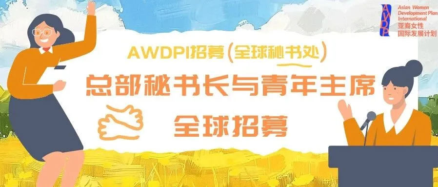
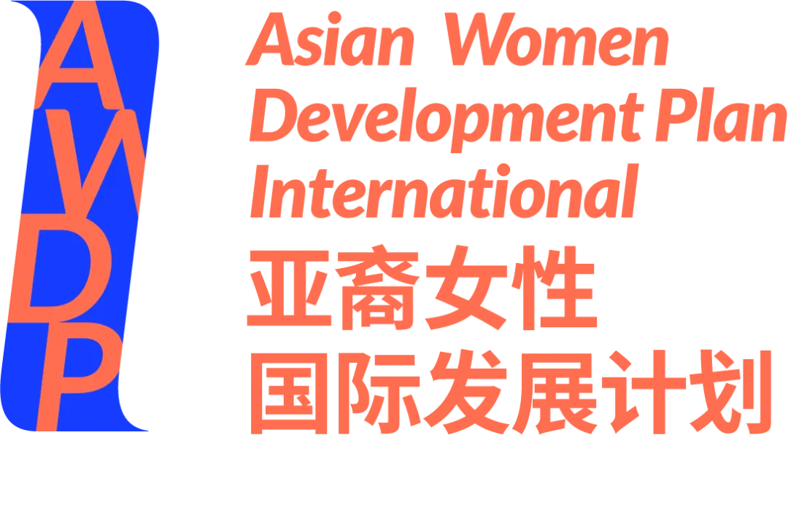
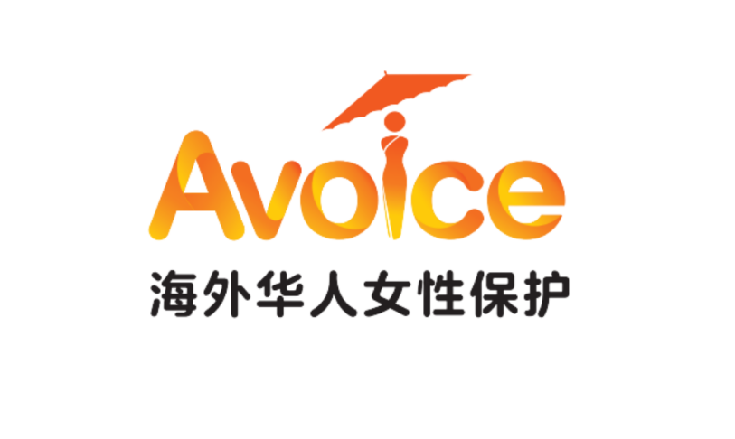
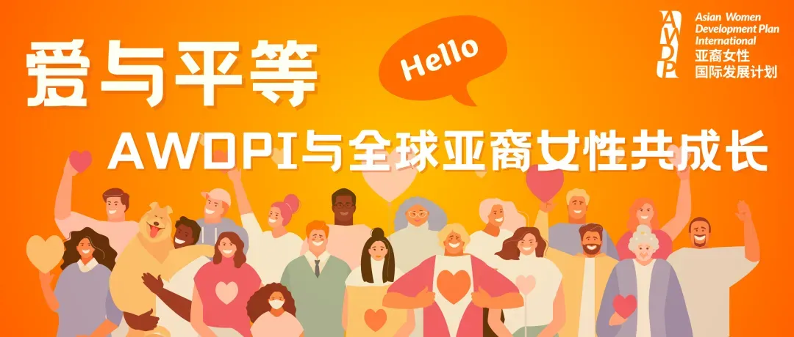
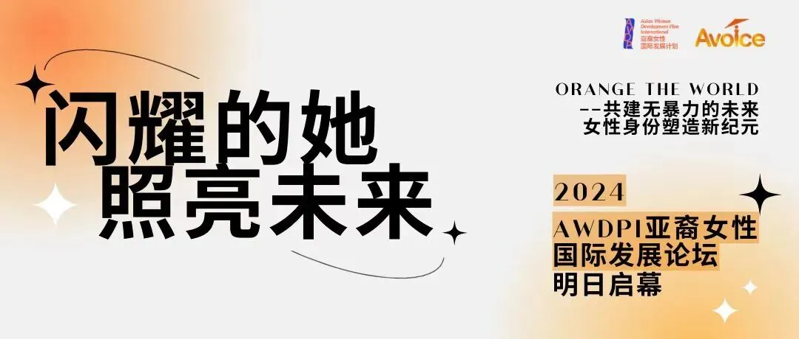
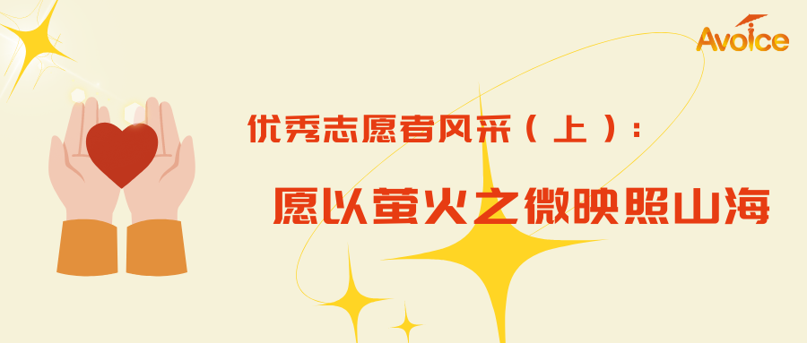
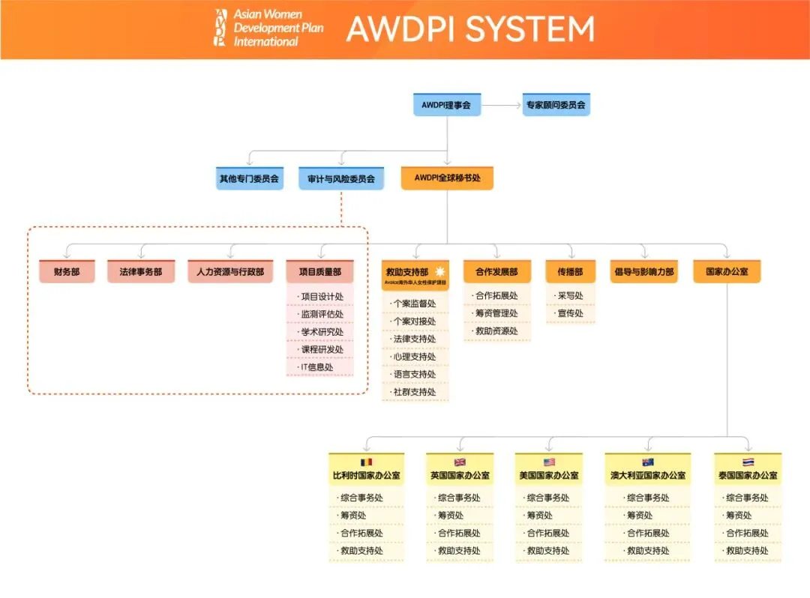

在过去的5年里，AWDPI从专注反家暴个案的Avoice海外华人女性保护项目，成长为跨越多国、涵盖更多女性议题的的国际公益组织。我们在欧洲、北美、澳洲、亚洲落地项目，与来自各界的伙伴携手，推动性别平等、反性别暴力与女性赋能的系统性变革。
随着项目的不断拓展与合作网络的扩大，我们也迎来了需要更稳健的治理体系、更高效的跨国协作以及更强的战略执行力 的新阶段。
这是一次 重要但不紧急的战略建设。我们希望用更长远的视角，找到真正认同 AWDPI 使命、具备远见与行动力的伙伴，携手强化组织的治理与执行，共同引领AWDPI的全球成长。
因此，AWDPI 正式启动秘书长（Secretary General）与青年主席（Youth Chair）的全球招募。她们将共同承担组织的重要工作，与所有核心团队伙伴一道，塑造更专业、协作、有韧性并具持续影响力的全球网络，让更多女性声音被听见、被尊重、被支持。
关于AWDPI
AWDPI亚裔女性国际发展计划（Asian Women Development Plan International）是一家国际公益组织，致力于消除针对海外亚裔女性的歧视和性别暴力，并促进她们的赋能与发展。
其由2020年成立的Avoice（海外华人女性保护项目，Against Violence to Overseas Chinese Women Program）发展而来。AWDPI在欧洲、北美和亚太的多个国家和地区开展工作，并在英国、美国、澳大利亚和比利时设立国家办公室团队。AWDPI与各界建立了广泛的合作网络，包括联合国系统组织、各国政府相关部门、国际组织、跨国公司以及学术机构。
AWDPI倡导对海外亚裔女性的生存困境的关注，并为她们提供持续的保护和支持。AWDPI希望令海外亚裔女性在社会、经济、文化、教育等方面获得更多发展机会，帮助她们成长为推动社会进步的重要力量。


我们的使命
消除针对亚裔女性的暴力与歧视，促进亚裔女性的保护与发展
我们的愿景
为女性创造爱与平等的世界
我们的价值观
参与、包容、赋能
我们致力于
为家暴幸存者提供救助支持。 通过完善的救助体系和强大的海外救助网络，及时响应海外亚裔女性在家暴预防、紧急救助和后续服务等方面的需求。
建立社群联结。通过组建线上社群矩阵和线下互助小组，为海外亚裔女性搭建交流、学习和互助的国际化平台，形成同伴支持网络，实现自我发展。
提升女性影响力。通过论坛、研讨会、工作坊等活动，积极促成多方联动，以分析经验、研究挑战、探讨对策，展现亚裔女性的力量与潜能。
发起宣传与倡导。积极开展公众宣传、学术研究和政策倡导，促进各国对海外亚裔女性的关注，并推动改善相关政策和发展环境。
我们在做什么


优秀志愿者风采

AWDPI组织架构

AWDPI亚裔女性国际发展计划整体组织架构
招募信息
AWDPI秘书长（ 全球秘书处-总部）
全面统筹全球战略与多国办公室的总执行负责人（1位）
工作地点
远程办公，配合可能的国际差旅
工作性质
志愿者
岗位职责
作为秘书长，将担任AWDPI全球运营的最高执行负责人，与联合创始人们一起工作，向理事会汇报，负责全球各办公室及部门的战略执行、日常管理与组织治理，包括但不限于：
一、全球组织统筹管理
制定并推进全球战略计划，确保各国办公室协同一致、目标清晰
统筹各区域/国家办公室的运营管理、人员沟通、和项目推进
二、跨部门协作与绩效管理
管理并协调AWDPI所有职能部门的整体运营
推动组织文化建设与绩效评估机制，提升团队执行力与使命感
三、制度建设与国际治理
完善全球多点办公的制度体系（含治理章程、财务人事规章、项目质量评估等）
协调理事会、顾问委员会、各国代表处等治理结构和内部管理，推动组织的透明、问责与合规
四、资源拓展与国际合作
拓展与国际组织、政府机构、高校、基金会和企业的战略合作
指导全球募资策略与捐赠关系管理，支持重点捐赠方服务与项目对接
五、外部代表与公共发声（非必须）
代表AWDPI出席国际会议、发表公开讲话、签署协议或参与多边倡议
维护组织公共形象，促进全球媒体传播与议题倡导
任职要求
认同 AWDPI 使命与价值观，具备性别平等与多元包容意识。
具备 责任感、行动力与抗压能力，能在无明确指令下主动识别问题并推进发展。
每周可投入 至少15小时的稳定工作时间，具备良好时间管理能力。
兼具 独立思考与强执行力 ，能将战略构想落地实施。
拥有 系统思维、项目管理与跨部门协调能力，善于领导多国团队与复杂任务推进。
具备 跨文化管理经验、优秀的中英文写作与公众表达能力。
富有 共情与沟通力，能协调志愿者和专家，化解分歧、营造信任支持的团队文化。
温和稳重、乐于倾听、尊重差异 ，具备服务式领导意识。
有志于 长期深耕公益、女性权利与国际发展领域。
拥有 3年以上非营利组织或跨国项目高层管理经验，熟悉 国际治理与资金运作机制优先。
通过考核后，需 任职至少两年。
岗位亮点
领导一个跨越五大洲的国际公益网络
直接参与全球性别平等议程与国际合作倡议
在兼具体系与开放性的环境中提升领导力
获得国际曝光与长期职业发展路径
有机会成为为AWDPI联合创始人及理事
AWDPI青年主席（ 全球秘书处-总部）
支持秘书长统筹全球战略与青年事务的青年领导负责人（1位）
工作地点
远程办公，可配合国际会议或出访差旅
工作性质
志愿者
岗位职责
一、协助秘书长与全球统筹工作
在秘书长指导下，参与 AWDPI 全球战略、重点项目与国际合作的协调与执行。
支持秘书长推动各国办公室与部门的协同，促进青年参与与治理透明。
协助秘书长落实组织文化建设、跨部门沟通与团队管理。
二、青年事务与倡议推动
代表全球青年群体发声，确保青年视角融入 AWDPI 的战略与决策。
策划并领导以青年为核心的项目、论坛或国际倡议，促进性别平等与社会创新。
建立并维护青年网络，促进跨国合作与知识共享。
三、组织支持与外部传播
支持组织品牌建设与公共传播，提升 AWDPI 在青年群体中的影响力。
运用自身社会影响力推广组织项目与活动，扩大公众参与与社会认知。
协助资源拓展、国际倡议及对外代表工作。
任职要求
深度认同 AWDPI 使命与价值观，具备性别平等与多元包容意识。
拥有 责任感、主动性与执行力 ，能在秘书长指导下推进组织目标。
每周可投入 至少15小时的稳定工作时间，具备良好时间管理能力。
具备 跨文化沟通、团队协作与项目管理能力，能协调多方资源。
优秀的 中英文沟通与写作能力 ，擅长公众表达与社会倡导。
富有 共情力与服务式领导意识 ，乐于倾听、尊重差异、促进协作。
具备 青年组织、非营利或国际项目经验（1年以上）者优先。
拥有一定 社会影响力或公共传播能力，善于推广公益项目者优先。
有志于 长期深耕公益、女性权利与国际发展领域。
通过考核后，需任职至少两年。
岗位亮点
直接参与 AWDPI 全球战略执行与秘书长领导下的核心治理工作。
代表青年在国际场合发声，推动跨国合作与性别平等议程。
获得秘书长及理事会导师指导和推荐信，提升领导力与国际影响力。
拥有自主发起与领导青年专项项目的机会，塑造真实社会改变。
岗位投递通道
扫描下方二维码或者“阅读原文”提交申请：
若申请人背景与秘书长或青年主席岗位暂不契合，AWDPI欢迎申请人加入其他符合专长的核心职务，共同推动机构的持续成长与使命实践。
投递须知
截止时间：滚动，直到找到合适的人选。
有任何疑问，欢迎联系邮箱[email protected]
因涉及核心岗位，有重要问题可以联系组织小助手（微信号：Avoice-WomenAid）咨询 。
志愿顺位：
1.本次招募为秘书长&青年主席专项，仅接受一志愿为这两个岗位的申请（以下称“专项岗位”），即 第一志愿必须为专项岗位；
2.申请人可以同时申请两个专项岗位作为第一、二志愿，也可以选择其他开放申请的岗位（以下称“其他岗位”）作为第二或三志愿顺位（如需）；
3.未来我们将重新开放其他岗位招募，具体招募信息请关注后续通知。
招募流程
01
提交简历
02
简历初选
03
笔试
04
面试
05
录取通知
06
入职培训
在AWDPI，我们始终相信，真正的改变来自持续的行动与共同的信念。
我们期待与那些具备远见、行动力与责任感的伙伴携手，共同建设一个更专业、有韧性、并具持续影响力的国际公益组织。
如果你愿意作为共同的领导者，参与塑造全球性别平等的未来——
欢迎此刻加入我们。
排版/封面｜池一诺